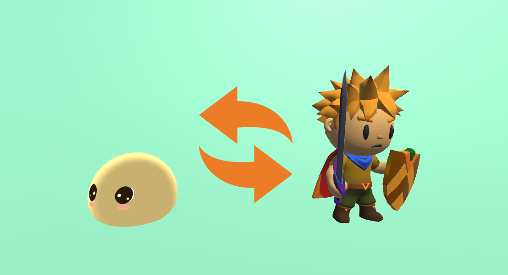

制作しているもの
SlimeAdventure に登場するスライムや勇者、 アイテム、フィールドのオブジェクトなど、ゲームに必要な 3D アセットを制作しています。 既存素材を探して組み合わせるのではなく自分で作ることで、 ゲームの仕様に合わせて形状やボーン構成を決められるのが利点でした。
制作フロー
- モデリング：ゲーム内での見え方（カメラ距離・画面サイズ）を先に決め、必要な情報量に合わせてポリゴン数を決める
- テクスチャ：ディテールは形状よりテクスチャで持たせ、モバイルでも軽く動く構成にする
- リギング / スキニング：アニメーションで曲げたい箇所を基準にボーンを配置し、ウェイトを調整
- Unity への組み込み：スケール・座標軸・マテリアル設定を Unity 側の前提に合わせて書き出し、実機で確認
実装者としてモデルを作る
プログラム側も自分で書くため、「実装しにくいモデル」がどういうものかを身をもって知っているのが 強みだと感じています。たとえば、揺らしたい部分にボーンを入れ忘れると後から手戻りが発生し、 原点やスケールがずれていると Unity 側で毎回補正コードが必要になります。
こうした「作り手と使い手の間で起きる無駄」を減らす意識が、 後に リギングを自動化するアドオンを 自作する動機になりました。